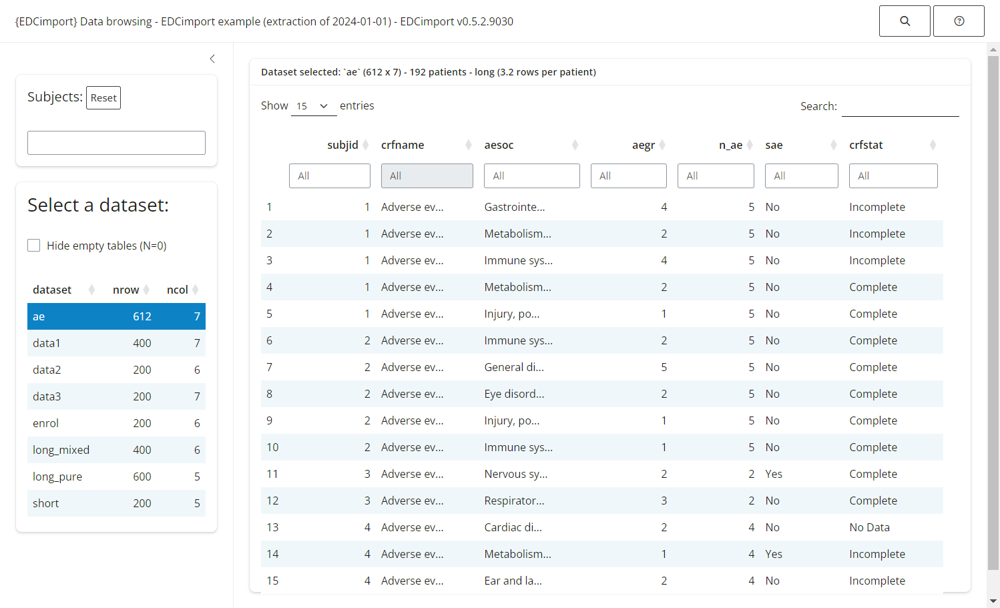

db = edc_example()
load_database(db)
edc_lookup()
#> ── Lookup table - EDCimport example (extraction of 2024-01-01) - EDCimport v0.7.
#> dataset nrow ncol n_id rows_per_id crfname
#> <chr> <dbl> <dbl> <int> <dbl> <chr>
#> 1 long_pure 150 4 50 3 long data
#> 2 data1 100 7 50 2 data1
#> 3 long_mixed 100 6 50 2 both short and long data
#> 4 data2 50 6 50 1 data2
#> 5 data3 50 7 50 1 data3
#> 6 enrol 50 6 50 1 enrol
#> 7 short 50 5 50 1 short data
#> 8 ae 175 7 48 3.6 Adverse events
edc_find_column("date")
#> # A tibble: 11 × 5
#> dataset crfname names labels prop_na
#> <chr> <chr> <chr> <chr> <dbl>
#> 1 data1 data1 date1 Date at visit 1 0
#> 2 data1 data1 date2 Date at visit 2 0
#> 3 data1 data1 date3 Date at visit 3 0
#> 4 data2 data2 date4 Date at visit 4 0
#> 5 data2 data2 date5 Date at visit 5 0
#> 6 data2 data2 date6 Date at visit 6 0
#> 7 data3 data3 date7 Date at visit 7 0
#> 8 data3 data3 date8 Date at visit 8 0
#> 9 data3 data3 date9 Date at visit 9 0
#> 10 data3 data3 date10 Date at visit 10 0
#> 11 enrol enrol enrol_date Date of enrolment 0
edc_find_value("immune")
#> # A tibble: 7 × 5
#> subjid dataset column column_label value
#> <chr> <chr> <chr> <chr> <chr>
#> 1 9 ae aesoc AE SOC Immune system disorders
#> 2 24 ae aesoc AE SOC Immune system disorders
#> 3 26 ae aesoc AE SOC Immune system disorders
#> 4 31 ae aesoc AE SOC Immune system disorders
#> 5 46 ae aesoc AE SOC Immune system disorders
#> 6 46 ae aesoc AE SOC Immune system disorders
#> 7 49 ae aesoc AE SOC Immune system disordersRead your database
If you are reading this vignette, chances are that you have requested an export from an EDC software that provided you with a directory filled with files of datasets.
Wouldn’t it be so tedious if you had to load all those files one by one? Lucky you, EDCimport knows a better way!
Depending on the type of files in your export directory, you should use:
read_all_sas(), to read.sas7bdatfilesread_all_xpt(), to read.xptfilesread_all_csv(), to read.csvfilesread_trialmaster()to read a TrialMaster zip archive.
Formats are imported through a metadata file, format_file, that can be either:
a
procformat.sasfile, containing the whole PROC FORMATa catalog file (
.sas7bcat)or a data file (
.csvor.sas7bdat) containing 3 columns: the SAS format name (repeated), each level, and its associated label. Useoptions(edc_var_format_name="xxx", edc_var_level="xxx", edc_var_label="xxx")to specify the names of the columns.
You can then load your datasets into the global environment with load_database().
library(EDCimport)
db = read_all_sas("path/to/my/files/folder", format_file="procformat.sas")
print(db)
load_database(db) #this also removes `db` to save some RAM
mean(dataset1$column5)Explore your database
Knowing a CRF by hand is not always an easy task, so EDCimport provide a few useful tools:
edc_lookup(), to remember what are the available datasets.edc_find_column()andedc_find_value(), to search the database for a column/label or for an actual value.
Shiny browser
The simplest way to explore your database is by running edc_viewer(), which launches a local Shiny application:
db = edc_example()
load_database(db)
edc_viewer()